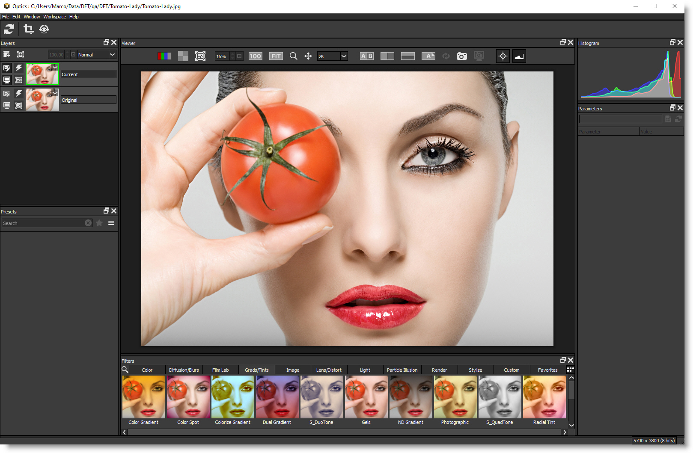

Loading An Image
The Optics standalone supports loading Camera RAW, JPEG, PNG, TIFF as well as Kodak® Cineon and DPX file formats used in motion picture and television production.
For more information on working with Camera Raw images, go to the
Working With Camera RAW Files tutorial.
1 Start the Optics Standalone and open a JPEG, PNG or TIFF image using File > Open.
or
2 In Photoshop or Lightroom, apply Optics.
• Photoshop/Elements: In the Filter menu, select Optics from the Boris FX group.
• Lightroom: In the Photo menu, select Edit In and then choose Edit in Boris FX Optics.
The image appears in the Viewer and thumbnails (small images) are created for all of the effects in the current category of the Filters window.